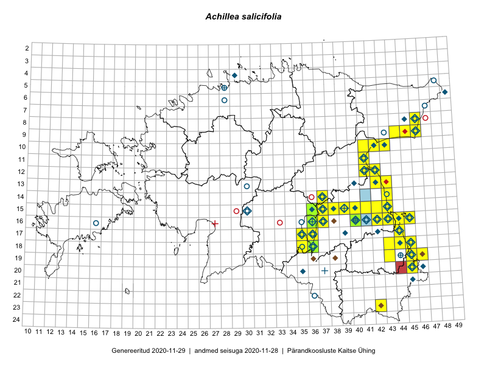

Achillea salicifolia
Uuendatud: 2016-12-01
Kaardile koondatud taksonid: Achillea salicifolia Besser

Kaart põhineb 49 kirjel.
Kuvatud viited 20 esimesele andmebaasikirjele, ülejäänud PlutoFis
- Peedu Saar: 2015-07-04: 18-45: ala
- Peedu Saar: 2015-07-04: 18-44: ala
- Toomas Kukk, Eerik Leibak: 2015-07-29: 16-45: ala
- Toomas Kukk, Eerik Leibak: 2015-07-29: 16-44: ala
- Peedu Saar, Liina Oja: 2015-07-24: 09-45: ala
- Peedu Saar: 2015-08-22: 11-41: ala
- Ott Luuk, Hannes Pehlak: 2015-07-24: 09-44: ala
- Toomas Kukk, Timo Luhamäe, Kersti Tambets, Sten Mander, Janika Sammasto: 2014-07-29: 19-45: ala
- Toomas Kukk, Timo Luhamäe, Kersti Tambets, Sten Mander, Janika Sammasto: 2014-07-30: 20-45: ala
- Thea Kull, Eerik Leibak: 2015-07-06: 14-43: ala
- Thea Kull, Eerik Leibak: 2015-07-06: 15-43: ala
- Thea Kull, Eerik Leibak: 2015-07-20: 06-45: ala
- Meeli Mesipuu, Timo Luhamäe: 2015-07-21: 08-46: ala
- Thea Kull, Eerik Leibak: 2015-07-23: 08-46: ala
- Thea Kull, Meeli Mesipuu: 2015-08-19: 19-45: ala
- Thea Kull, Meeli Mesipuu: 2015-08-12: 16-43: ala
- Thea Kull: 2015-06-15: 15-40: ala
- Ulvi Selgis: 2016-08-16: 11-41: GPS punkt
- Kai Rünk, Ülle Jõgar, Illi Tarmu: 2015-07-29T07:00Z: 10-42: ala
- Meeli Mesipuu, Thea Kull: 2015-08-19: 19-46: ala